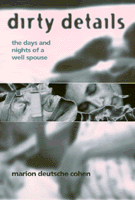

<body bgcolor="#FFFFFF" text="#000000" link="#0000FF" vlink="#CC0000" alink="#CC0000"><center><hr width="350" size="1" align="center" noshade>Caring for her disabled husband, Marion Cohen tells her story from the viewpoint of a Well Spouse<hr width="350" size="1" align="center" noshade><p><a href="https://cdcshoppingcart.uchicago.edu/Cart/ChicagoBook.aspx?ISBN=9781566394253&&PRESS=temple" target="_top">Buy this book!</a> | <a href="https://cdcshoppingcart.uchicago.edu/Cart/Cart.aspx?PRESS=temple" target="_top">View Cart</a> | <a href="https://cdcshoppingcart.uchicago.edu/Cart/Cart.aspx?PRESS=temple" target="_top">Check Out</a></p><p></p></center><!--none//--><h1>Dirty Details</h1>
<H2>The Days and Nights of a Well Spouse</H2>
<h3>Marion Deutsche Cohen, foreword by Marty Wyngaarden Krauss</h3>
<P>cloth 1-56639-425-2 $69.50, Apr 96, <FONT COLOR=#990033>Out of Stock Unavailable</FONT>
<br>paper 1-56639-426-0 $30.95, Mar 96, <FONT COLOR=#990033>Available</FONT>
<br>Electronic Book 1-43990-373-5 $30.95 <FONT COLOR=#990033>Out of Stock Unavailable</FONT>
<BR> 224 pp
5.5x8.25
24&nbsp;halftones
</P><BLOCKQUOTE><I>"Marion and her family have done a wonderful job of showing that there </I>is<I> life after innocence.... And while each episode is a cry for help&#151a proof that 'one person, one family cannot do this alone'&#151it is also a testimony that no matter how late in the game help arrives, it will not be </I>too<I> late. Her message, then, to society is: mark us 'fragile' but don't leave us for dead."</I>
<br>&#151<b>Maggie Strong</b>, Founder, Well Spouse Foundation and author of <I>Mainstay</I><I></I></BLOCKQUOTE>
<P>In 1977, at the age of 36, Jeffrey Cohen, a physicist at the University of Pennsylvania, was diagnosed with multiple sclerosis. But it wasn't until 10 years later that the "dirty details" began, when the disease had progressed to the point where he could not transfer himself out of his wheelchair. That point is where his wife Marion begins her memoir of caregiving: "If I had to explain it in three words, those words would be 'nights,' 'lifting,' and 'toilet.' And then, if I were permitted to elaborate further, I would continue, 'nights' does not mean lying awake in fear listening for his breathing. 'Lifting' does not mean dragging him by the feet along the floor. And 'toilet' does not mean changing catheters."
<P>But "dirty details," Marion Cohen teaches us, involves more than "nights," "lifting," and "toilet." There is the loss, anger, fear, and desperation that envelops the family. She reveals what it felt like to be consistently in "dire straits" with no real help or understanding, what she characterizes as society's "conspiracy of silence." Chronicling their lives in the context of her husband's progressing disease, she discusses the raging emotions, the celebrations, the day-to-day routine, the arguments, the disappointments, and the moments of closeness. During the 15 years she cared for him at home, both continued to work on various projects, share in the rearing of their four children, and be very much in love. This powerful, honest narrative also delves into the process of making the "nursing-home decision" and those decisions Cohen made to put her and her family's life together again.
<BR>&nbsp;<h2>Excerpt</h2><P>Excerpt available at <a href="http://www.temple.edu/tempress">www.temple.edu/tempress</a></p>
<BR>&nbsp;<h2>Reviews</h2>
<p><i>"Cohen's message is that we are ignoring the plight of the caregivers, as well as the plight of those people with chronic severe illnesses. </i>Dirty Details<i> is a powerful meditation on the role of the well spouse in contemporary society, and I recommend it highly."</i>
<br>&#151<b><a href="http://mentalhelp.net/books/books.php?type=de&id=1271" target="new">Metapsychology Online</a></b>
<BR>&nbsp;<h2>Contents</h2><P>
<p>Foreword &#150 Marty Wyngaarden Krauss
<br>Preface
<br>1. The Trike and the 49 Bus
<br>2. Nights, Lifting, and Toilet: The First Conspiracy of Silence
<br>3. Dire Straits
<br>4. Scared
<br>5. Too Many Variables: Relationships within the Household
<br>6. A Separate Species: Relationships with the World and with Ourselves
<br>7. Preparing for His Ghost: About Loss
<br>8. Where Do We Stand? The Second Conspiracy of Silence
<br>Resources
<br>Photo Gallery
</P><BR>&nbsp;<H2>About the Author(s)</H2>
<table><tr><td valign="top"><img src="/tempress/authors/1253_au1.gif" height="90" width="75"></td><td width="100%" valign="middle"><p><B>Marion Deutsche Cohen </B>is actively involved in the Well Spouse community and has published many poems and articles on the subject and on home schooling that have appeared in such publications as the <I>American Poetry Review, Disability Rag, </I>and <I>Mothering. </I>She currently teaches mathematics at Temple University.</P></td></tr></table>
<BR><H2>Subject Categories</H2>
<p><A HREF="/tempress/disability.html" TARGET="_top">Disability Studies</a>
</p>
<p align="center"><a href="https://cdcshoppingcart.uchicago.edu/Cart/ChicagoBook.aspx?ISBN=9781566394253&&PRESS=temple" target="_top">Buy this book!</a> | <a href="https://cdcshoppingcart.uchicago.edu/Cart/Cart.aspx?PRESS=temple" target="_top">View Cart</a> | <a href="https://cdcshoppingcart.uchicago.edu/Cart/Cart.aspx?PRESS=temple" target="_top">Check Out</a></p><p><font face="Arial" size="1"><a href="copyright.html" onMouseOver="window.status='Web Copyright Policy';return true;" onMouseOut="window.status=''" title="Web Copyright Policy">&copy;</a> 2015 <a href="http://www.temple.edu" target="new" onMouseOver="window.status='Link to Temple University home page';return true;" onMouseOut="window.status=''" title="Link to Temple University home page">Temple University</a>. All Rights Reserved. http://www.temple.edu/tempress/titles/1253_reg.html</font></p>